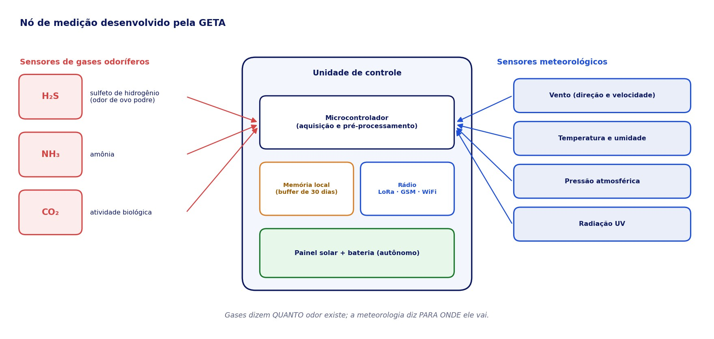
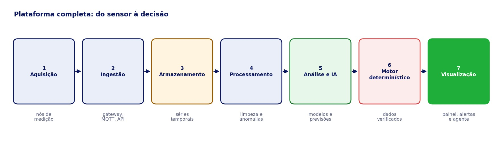
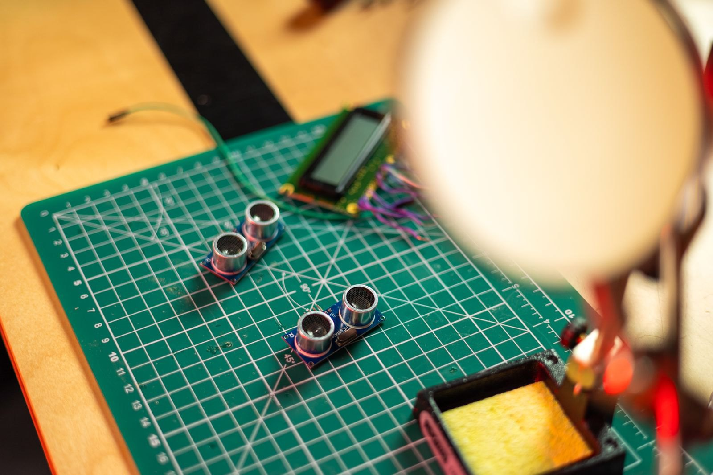
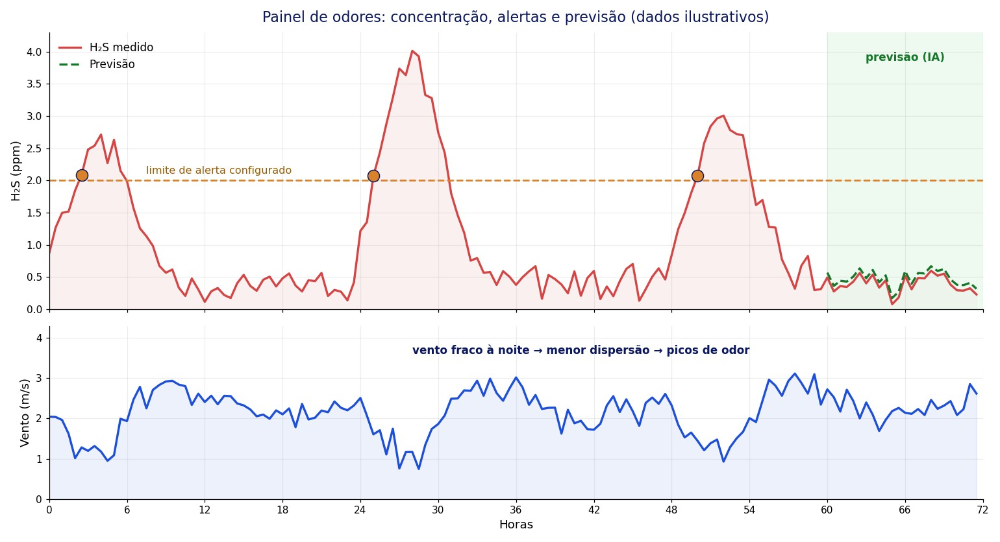
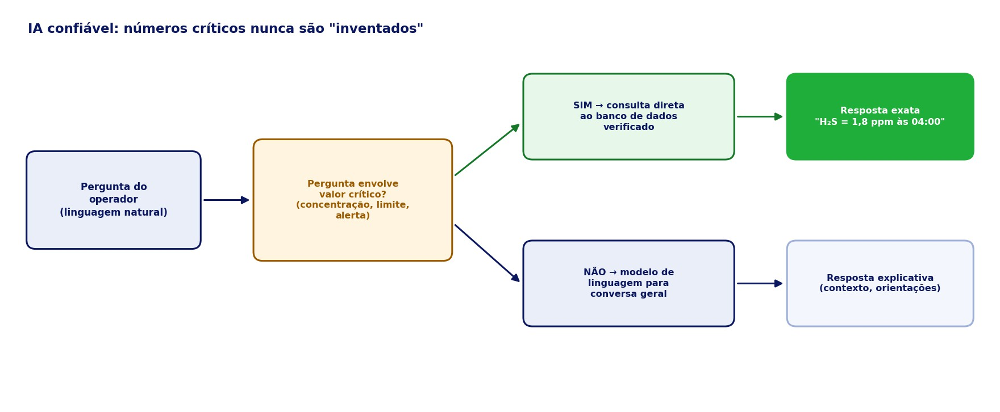
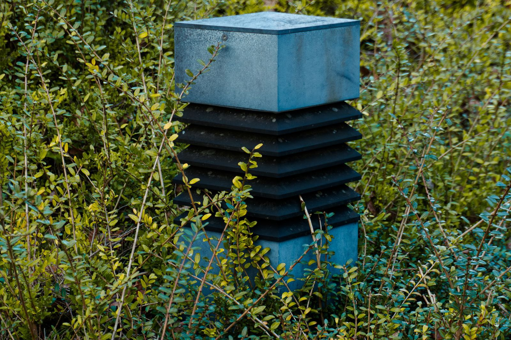

Problema / desafio do cliente
Odores de aterros, estações de tratamento de efluentes, compostagem e indústrias são uma das principais causas de reclamações da vizinhança e de conflitos com órgãos ambientais. O problema é que o odor varia hora a hora e depende tanto da emissão quanto do vento: uma medição pontual ou uma campanha de poucos dias não mostra quando, onde e por que o incômodo acontece.
Os equipamentos comerciais de monitoramento contínuo são caros, fechados e entregam dados brutos que poucos conseguem interpretar. O objetivo foi desenvolver sensores próprios, de baixo custo, e uma plataforma completa que transforma as medições em alertas, previsões e decisões claras.
Contexto e características do processo
- Projeto de desenvolvimento tecnológico (P&D) da GETA, em duas partes: o hardware de medição e o ecossistema digital de dados e IA.
- Aplicações em aterros sanitários, ETEs, pátios de compostagem e indústrias com emissão de gases odoríferos, inclusive em áreas remotas, sem rede elétrica ou de dados.
- Foco nos principais compostos odoríferos e indicadores de atividade biológica: sulfeto de hidrogênio (H₂S), amônia (NH₃) e dióxido de carbono (CO₂), medidos junto com as variáveis meteorológicas que controlam a dispersão.
Diagnóstico e dados analisados
- Os picos de odor costumam ocorrer à noite e no início da manhã, quando o vento é fraco e a atmosfera está estável, justamente quando não há ninguém medindo.
- Sem a direção e a velocidade do vento junto com a concentração, não é possível saber se uma reclamação veio de uma fonte específica.
- Os modelos de linguagem (IA generativa) usados de forma genérica podem "inventar" números quando perguntados sobre valores de sensores, o que é inaceitável em decisões ambientais.
- Em campo, cortes de energia e falhas de comunicação causam perda de dados se o sistema não for projetado para isso.
Metodologia utilizada
- Projeto do nó de medição: escolha dos sensores de gases e meteorológicos, microcontrolador, comunicação e alimentação autônoma.
- Prototipagem e testes do nó em bancada e em campo, com armazenamento local e transmissão sem fio.
- Arquitetura da plataforma em 7 camadas, do sensor ao painel.
- Modelos de análise: índices derivados (por exemplo, atividade microbiana em compostagem), detecção de anomalias e previsão com IA.
- Camada de IA confiável: motor determinístico que garante que valores críticos venham sempre do banco de dados verificado.
- Análise de riscos operacionais e plano de implantação em fases.
Solução de engenharia desenvolvida
1. Nós de medição próprios. Cada nó mede H₂S, NH₃ e CO₂, além de vento, temperatura, umidade, pressão e radiação UV. Funciona com painel solar e bateria, transmite por LoRa, GSM ou WiFi e guarda até 30 dias de dados na memória local se a comunicação cair. Os gases são lidos a cada 15 minutos e a meteorologia a cada 5 minutos.

2. Plataforma completa com IA. Os dados chegam por gateway e MQTT, são armazenados em banco de séries temporais, limpos e verificados automaticamente e alimentam modelos de análise e de previsão. O usuário acessa tudo por um painel com alertas ou conversando em linguagem natural com um agente inteligente.

Tecnologias e processos envolvidos
- Hardware: microcontrolador com rádio LoRa, módulos GSM e WiFi, sensores eletroquímicos e de estado sólido para gases, estação meteorológica e alimentação solar.
- Ingestão: gateway LoRaWAN, broker MQTT e API REST.
- Banco de dados: PostgreSQL com extensão para séries temporais.
- Processamento: limpeza, agregações e detecção de anomalias (Isolation Forest, z-score).
- IA e previsão: ARIMA, Prophet, Random Forest, XGBoost e redes LSTM.
- Visualização: painel interativo em R Shiny e Grafana, com agente conversacional.

Modelagem, simulação e ferramentas computacionais
A plataforma cruza concentração e meteorologia para mostrar quando o odor aparece e por quê, e usa modelos de IA para prever os próximos picos e antecipar ações (cobertura de frentes de descarga, ajuste de aeração, comunicação com a vizinhança).

Para que a IA seja confiável, foi criado um motor determinístico: quando a pergunta envolve um valor crítico (concentração, limite, alerta), a resposta vem diretamente do banco de dados verificado, e não de um modelo de linguagem que poderia "alucinar" números.

Resultados obtidos
- Protótipo funcional de nó de medição autônomo, com sensores de gases odoríferos, meteorologia, armazenamento local e transmissão sem fio.
- Arquitetura completa da plataforma, do sensor ao painel, modular, escalável e baseada em ferramentas de código aberto.
- IA com respostas verificadas para valores críticos, eliminando o risco de números inventados.
- Robustez em campo: bateria e painel solar contra cortes de energia, buffer de 30 dias contra falhas de comunicação, backups diários e validação automática dos dados.
- Alertas automáticos e painel pensados para usuários não técnicos, que recebem decisões claras e não apenas números.
CAPEX/OPEX e análise técnico-econômica
A plataforma foi estruturada em três níveis de implantação, para caber desde um projeto piloto até uma rede industrial:
- Piloto local: computador de baixo custo e banco de dados local, a partir de cerca de US$ 50–100 no primeiro ano de infraestrutura.
- Semiprofissional: servidor em nuvem padrão e APIs de IA básicas, cerca de US$ 300–500 no primeiro ano.
- Industrial: nuvem dedicada, bancos redundantes e agentes de IA, a partir de cerca de US$ 2.500–5.000 no primeiro ano.
Como os valores críticos vêm do banco de dados verificado, não é preciso retreinar modelos nem usar hardware de alto custo, o que reduz o custo operacional da camada de IA.
Escopo e responsabilidades da GETA
A GETA foi responsável por todo o desenvolvimento:
- projeto e prototipagem do hardware de medição;
- arquitetura da plataforma de dados em nuvem;
- modelos de análise, detecção de anomalias e previsão com IA;
- motor determinístico e agente conversacional;
- painel de visualização e alertas;
- análise de riscos operacionais e plano de implantação em fases.
Principais entregáveis
- Protótipo de nó de medição autônomo (gases odoríferos + meteorologia).
- Arquitetura e esquema de banco de dados da plataforma.
- Painel interativo com módulos de monitoramento, previsão e alertas.
- Motor determinístico e integração com agente conversacional.
- Plano de implantação em quatro fases trimestrais.
Galeria
